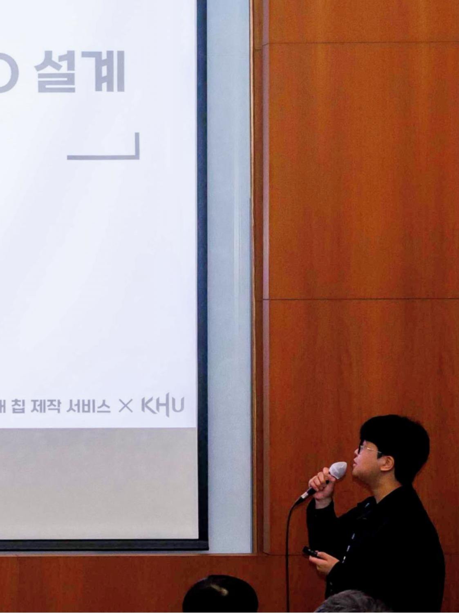

About Me

- I am a Research Intern at the Autonomous Robot Intelligence Laboratory (ARIL), Seoul National University.
- My academic background is in Electronic Engineering (Kyung Hee University), where I specialized in Open-Source EDA-based Chip Design.
- My research focuses on Hardware Architecture for Autonomous Robotics and Space Exploration.
Experience & Education
-
Seoul National University, Seoul, Korea
Research Intern at the ARIL (2025 - Present)
-
Kyung Hee University, Yongin, Korea
B.S. in Electronic Engineering (2019 - 2025)
Research Interests
- Hardware Architecture for Autonomous Robotics and Space Exploration
- Chip Design using Open-Source EDA
Award
-
Grand Prize, Minister's Award (Deputy Prime Minister and Minister of Science and ICT)
2025 My Chip Competition, 12-bit CORDIC-based NCO
Academic & Extracurricular Activities
-
Chip Design Project #3: 12-bit CORDIC-based NCO (2025 1st My Chip Service)
Open-Source EDA-based design, taped out via the My Chip Service.
-
Chip Design Project #2: 8-bit FIR Processing Element (2024 2nd My Chip Service)
Open-Source EDA-based design, taped out via the My Chip Service.
-
Panelist: 2024 Presidential Town Hall Meeting
Selected as a student representative to provide feedback on the "My Chip Service."
-
Presenter: 2024 IEIE Summer Conference
Presented "ETRI 0.5㎛ Process-based 4-bit Booth's Multiplier Design and Chip Test."
-
Chip Design Project #1: 4-bit Booth's Multiplier (2023 1st My Chip Service)
Open-Source EDA-based design, taped out via the My Chip Service.